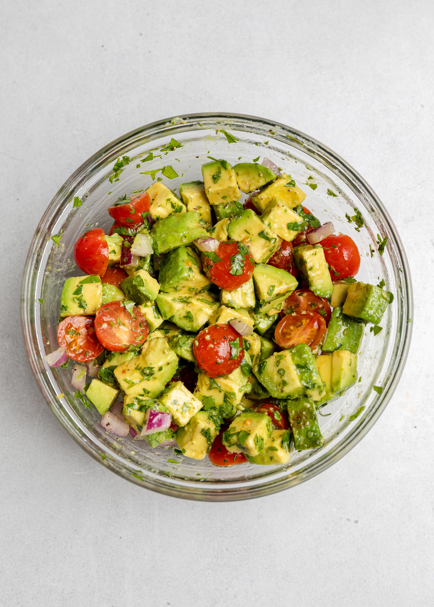

Avocado & Tomato Salsa

Description
A simple diced avocado, tomato, red onion, and cilantro salsa that is perfect to eat on tortilla chip. It's a quick 15 minutes recipe.
Ingredients
- 2 ripe avocados, pitted and diced
- 1 cup tomato, diced (any type of tomato)
- ¼ cup onion, diced
- ¼ cup cilantro, minced
- 2 tablespoons olive oil
- 2 tablespoons of lime juice
- salt and pepper, to taste
Steps
- Add the avocado, tomato, onion, and cilantro to a large mixing bowl. Add olive oil, fresh lime juice, and pinch of salt and pepper. Gently mix until it fully combines.
- Serve immediately or keep in the refrigerate for up to 2 days. The lime will keep the avocado from browning.